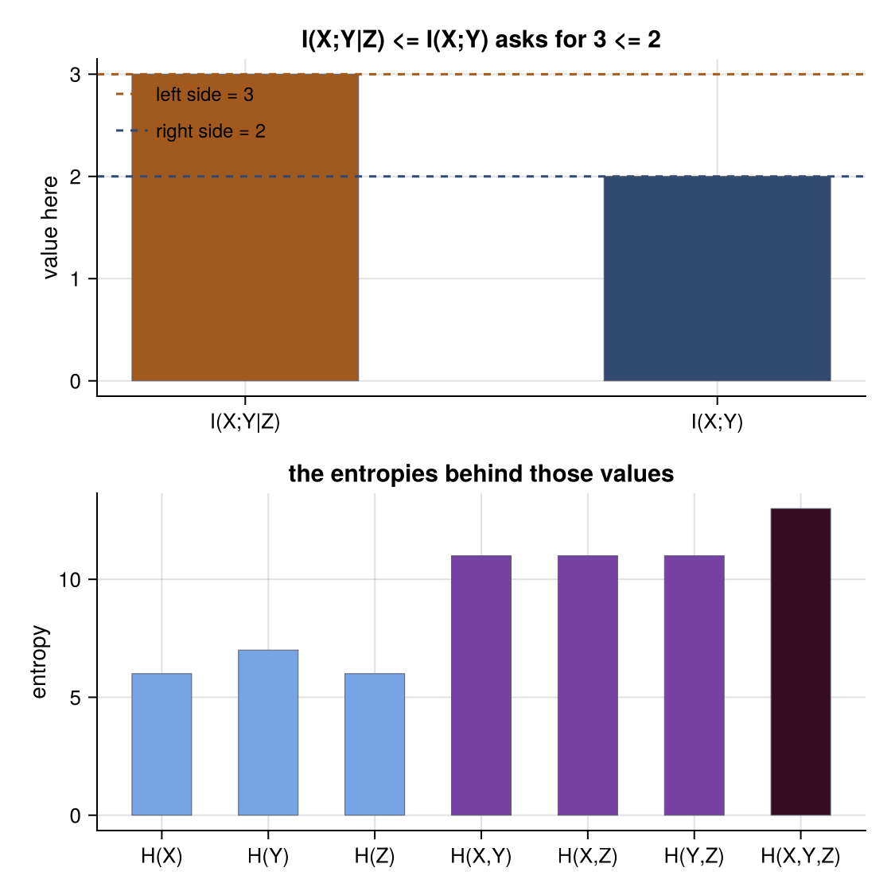
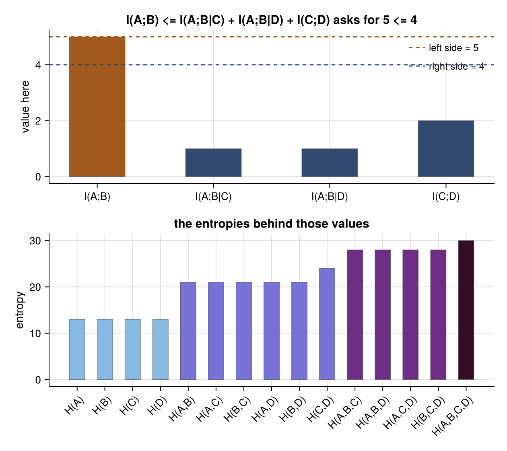
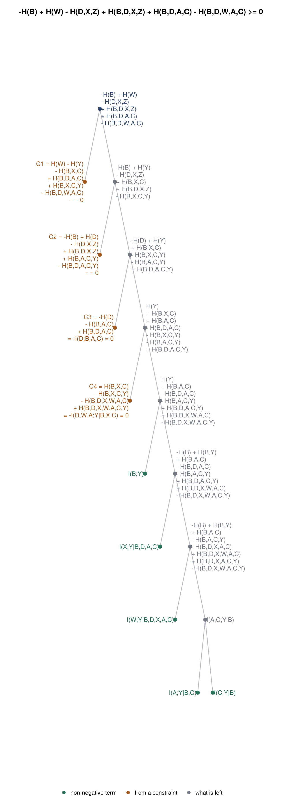

Illustrations
A proof is a decomposition, and a decomposition is a tree: the expression splits into a non-negative term and a remainder, which splits again. These utilities turn that structure, and the constraints of a problem, into pictures.
Drawing needs CairoMakie and GraphMakie; the package itself stays free of dependencies and only gains the plotting methods once they are loaded:
using Xitip
using CairoMakie, GraphMakie, Graphs, NetworkLayoutThe structures themselves (proof_tree, chain_rule_tree, constraint_graph) are plain data and need nothing extra.
The tree behind a proof
plot_proof_tree draws the derivation. The expression sits at the root, each non-negative term branches off to the left, and what is still to account for carries on down to the right, until nothing is left:
plot_proof_tree(explain("2 H(X,Y,Z) <= H(X,Y) + H(Y,Z) + H(X,Z)"))
Reading it: Han's inequality for three variables is I(X;Y|Z) plus I(X,Y;Z), and that second piece is in turn I(X;Z|Y) plus I(Y;Z).
Terms coming from your own constraints are drawn in their own colour and labelled C1, C2, ..., with their entropy form and the reason they are non-negative. C1 below is minus a conditional mutual information, which the Markov chain forces to zero:
plot_proof_tree(explain("I(W;Z) <= I(X;Y)", "W/X/Y/Z"))
Without a plotting package loaded, or for a statement with no proof, the same call raises a XitipError saying so. The text form is always available:
proof_tree(explain("I(W;Z) <= I(X;Y)", "W/X/Y/Z"))-H(W) - H(Z) + H(X) + H(Y) + H(W,Z) - H(X,Y)
├─ C1 = H(X) - H(W,X) - H(X,Y) + H(W,X,Y)
│ = -I(W;Y|X) = 0
└─ -H(W) - H(Z) + H(Y) + H(W,Z) + H(W,X) - H(W,X,Y)
├─ C2 = H(Y) - H(Z,Y) - H(W,X,Y) + H(W,Z,X,Y)
│ = -I(Z;W,X|Y) = 0
└─ -H(W) - H(Z) + H(W,Z) + H(W,X) + H(Z,Y) - H(W,Z,X,Y)
├─ I(W;Y|Z,X)
└─ -H(W) - H(Z) + H(W,Z) + H(W,X) + H(Z,X) + H(Z,Y) - H(W,Z,X) - H(Z,X,Y)
├─ I(Z;X|W)
└─ I(X;Y|Z)
detail=true writes the entropy form under each label, which is worth it for small trees and unreadable for large ones:
plot_proof_tree(explain("H(X,Y,Z) <= H(X,Y) + H(Z)"); detail=true)
The chain rule
plot_chain_rule draws the expansion
\[H(X_1, \ldots, X_n) = H(X_1) + H(X_2 \mid X_1) + \cdots + H(X_n \mid X_1, \ldots, X_{n-1})\]
as the tree it is, each remainder conditioning on one more variable:
plot_chain_rule(["X", "Y", "Z", "W"])
Everything can be conditioned on a fixed set from the start:
plot_chain_rule(["A", "B", "C"], ["S"])
The constraints of a problem
plot_constraints draws the variables and the structural constraints tying them together: a Markov chain as a path, mutual independence as dashed links, and a functional dependence as an arrow from each argument to the variable it determines.
plot_constraints("I(W;Z) <= I(X;Y)", "W/X/Y/Z")
plot_constraints("H(S) <= H(X,Y)", "S:X,Y", "X.Y", "Y/S/Z")
Constraints written as general relations (I(X;Y|Z) = 0 and the like) have no natural edge, so they are left out; constraint_graph returns exactly what is drawn.
A counterexample
When a statement cannot be proven, the certificate is a set of entropy values that satisfies every elemental inequality and constraint but not the statement. plot_counterexample draws what the statement's own quantities come to at those values, which is where the verdict comes from, and the entropies behind them:
plot_counterexample(explain("I(X;Y|Z) <= I(X;Y)"))
The top panel is the statement, term by term: each bar is one quantity as written, coloured by which side of the relation it sits on, and the dashed lines are what the two sides add up to. The statement asks for the left line to sit below the right one, and it does not.
The structure of the entropies is often the point too. For the Ingleton expression the singletons all agree, the pairs agree except for one, and the triples agree again — the shape of the polymatroid that defeats it:
plot_counterexample(explain("I(A;B) <= I(A;B|C) + I(A;B|D) + I(C;D)"))
entropy_table returns the same numbers as exact rationals:
entropy_table(explain("I(X;Y|Z) <= I(X;Y)"))7-element Vector{Pair{String, Rational{BigInt}}}:
"H(X)" => 6
"H(Y)" => 7
"H(Z)" => 6
"H(X,Y)" => 11
"H(X,Z)" => 11
"H(Y,Z)" => 11
"H(X,Y,Z)" => 13More of the same
A proof that leans on several constraints, over eight variables and ten levels deep:
statement = "I(B;D,X,Z) <= I(W;A,B,C,D)"
constraints = ["I(W;A,B,C,D) = I(Y;B,C,X)", "I(D;A,B,C,Y) = I(B;D,X,Z)",
"I(D;A,B,C) = 0", "I(Y;A,D,W|B,C,X) = 0"]
plot_proof_tree(explain([statement; constraints]))
Han's inequality for three variables, whose proof is a chain of three terms:
plot_proof_tree(explain("2 H(X,Y,Z) <= H(X,Y) + H(Y,Z) + H(X,Z)"))
Saving a figure
The figures are ordinary Makie figures, so they are saved the usual way, in whatever format CairoMakie supports:
fig = plot_proof_tree(explain("H(X,Y,Z) <= H(X,Y) + H(Z)"))
save("proof.pdf", fig) # or .png, .svgThe figure is sized from the labels it has to fit, so it is readable without being asked. size = (width, height), title, fontsize and wrap (how many characters before a long expression is broken over lines) are there for when the default does not suit the expression at hand.